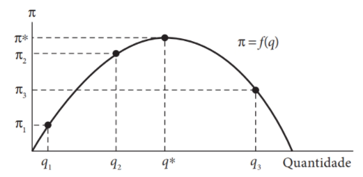
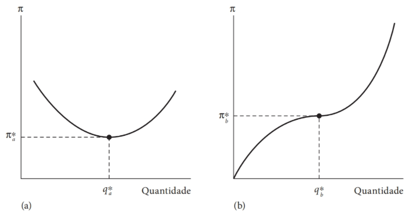

Elementos de Matemática
Otimização irrestrita de funções univariadas
Motivação
Suponha que uma firma deseje maximizar os lucros obtidos com a venda de um determinado bem particular.
Suponha, ainda, que os lucros recebidos, \(\pi\), dependem apenas da quantidade vendida, \(q\), deste bem:
\[\pi = f(q). \qquad(1)\]

Motivação
Nos pontos \(q_1\) e \(q_2\) da Figura 1, os lucros obtidos variam positivamente com a quantidade produzida: \(\frac{\Delta \pi}{\Delta q} > 0.\)
Contanto que \(\Delta \pi/\Delta q\) seja positivo, a firma continuará aumentando sua produção.
Para pontos à direita de \(q^*\), como \(q_3\), no entanto, \(\Delta \pi/\Delta q\) é negativo e, portanto, o gerente desta firma notará que um erro foi cometido.
Uma inspeção visual da Figura 1 sugere que os lucros são maximizados no ponto \(q^*\).
Derivadas
Um tópico importante em muitas disciplinas científicas, incluindo economia, é o estudo do quão rápido quantidades mudam ao longo do tempo.
Para calcular a posição futura de um planeta, prever o crescimento populacional de uma espécie biológica, ou para estimar a demanda futura de uma determinada commodity, precisamos de informações acerca das taxas de variação.
O conceito usado para descrever a taxa de variação de uma função é o de derivada.
Derivadas
A economia elementar nos diz que, dada uma função custo total \(C = f(Q)\), onde \(C\) denota o custo total e \(Q\) a quantidade produzida, o custo marginal é definido como a variação no custo total resultante de uma pequena variação (infinitesimal) na quantidade produzida.
Sabemos que o custo marginal pode ser medido pela inclinação da curva de custo total, que nada mais é que o limite da razão \(\Delta C/\Delta Q\) quando \(\Delta Q\) tende a zero.
Assim, o conceito de inclinação de uma curva é a contrapartida geométrica do conceito de derivada.
Diferenciabilidade
Função diferenciável
Definição 1. Uma função \(f\) é diferenciável no ponto \(a\) se: \[\lim_{h \to 0} \frac{f(a+h) - f(a)}{h},\] existe.
- Neste caso, este limite é denotado por \(f'(a)\) e é chamado de derivada de \(f\) no ponto \(a\):
\[f'(a) = \lim_{h \to 0} \frac{f(a+h) - f(a)}{h}.\]
- Dizemos, ainda, que uma função \(f\) é diferenciável se \(f\) é diferenciável em \(a\) para todos os pontos \(a\) no domínio da função.
Definição
Convenção de notação: às vezes estamos interessados em explicitar o ponto no qual a derivada será avaliada.
Por exemplo, a avaliação da derivada da nossa função lucro Equação 1 no ponto \(q = q_1\) pode ser denotada por:
\[\left.\frac{d\pi}{d q}\right|_{q = q_1}. \qquad(2)\]
Na Figura 1 temos, então:
\[\begin{aligned} \left.\frac{d\pi}{d q}\right|_{q = q_1} &>& 0, \\ \left.\frac{d\pi}{d q}\right|_{q = q_3} &<& 0. \end{aligned}\]
Condição de primeira ordem
Qual é o valor de \(d\pi/d q\) avaliada no ponto \(q^*\)?
À esquerda de \(q^*\) a inclinação da função lucro é positiva, enquanto à direita, a inclinação é negativa.
No ponto \(q^*\), a inclinação de \(f(q)\) é igual a zero.
Este resultado é geral. Para uma função contínua e diferenciável \(f\) univariada atingir seu valor de máximo (mínimo) em um determinado ponto, a derivada avaliada neste ponto deve ser igual a zero:
\[\left.\frac{d\pi}{dq}\right|_{q = q^*} = \left.\frac{df}{dq}\right|_{q = q^*} = 0.\]
Condições de segunda ordem
Figura 2: Funções lucros e condições de primeira e segunda ordem. Fonte: Nicholson e Snyder (2019).
Condições de segunda ordem
Os dois casos exemplificados pela Figura 2 evidenciam que \(d\pi/d q = 0\) é uma condição necessária mas não suficiente para assegurar um ponto de máximo.
Para assegurar que o ponto crítico encontrado seja, de fato, um ponto de máximo (mínimo) relativo, uma segunda condição deve ser imposta.
Esta condição é, intuitivamente, clara: os lucros obtidos com a produção de uma quantidade um pouco maior ou um pouco menor que \(q^*\) devem ser menores que os lucros associados a \(q^*\).
Matematicamente, se \(q<q^*\) a derivada \(d\pi/dq > 0\), e se \(q > q^*\) esta derivada deve ser negativa.
Ou seja, no ponto \(q^*\), \(d\pi/dq\) deve ser decrescente (negativa).
Segundas derivadas
A derivada de uma derivada é chamada segunda derivada (ou derivada de segunda ordem) e é denotada por:
\[\frac{d^2 \pi}{d q^2}, \qquad \frac{d^2 f}{d q^2}, \qquad f''(q).\]
Portanto, a condição adicional para que \(q^*\) represente um máximo local é dada por:
\[\left.\frac{d^2\pi}{dq^2}\right|_{q=q^*} = f''(q)|_{q=q^*}<0. \qquad(3)\]
Regras de diferenciação
Se \(f\) é uma função constante, \(f(x) = c\), então: \(f'(x) = 0\).
Dada qualquer constante \(a\), \(f(x) = x^a \implies f'(x) = ax^{a-1}\).
Se \(f\) e \(g\) são funções diferenciáveis, então, \(f \pm g\) também é diferenciável e: \[(f\pm g)'(x) = f'(x) \pm g'(x).\]
Se \(f\) e \(g\) são funções diferenciáveis, então, \(f \cdot g\) também é diferenciável e:
\[(f\cdot g)'(x) = f'(x) \cdot g(x) + f(x) \cdot g'(x).\]
Se \(f\) e \(g\) são funções diferenciáveis em \(x\) e \(g(x) \neq 0\), então, \(f/g\) também é diferenciável em \(x\):
\[\left(\frac{f}{g}\right)'(x) = \frac{f'(x)\cdot g(x) - f(x) \cdot g'(x)}{(g(x))^2}.\]
Regras de diferenciação
Regra da cadeia. Se \(g\) é diferenciável em \(x\), e \(f\) é diferenciável em \(g(x)\), então, \(f \circ g\) é diferenciável em \(x\), e:
\[(f \circ g)'(x) = f'(g(x)) \cdot g'(x).\]
Alternativamente, se \(y = f(x)\) e \(x = g(z)\), então:
\[\frac{dy}{dz} = \frac{dy}{dx} \frac{dx}{dz} = \frac{df}{dx} \frac{dg}{z}.\]
\(f(x) = e^x \implies f'(x) = e^x\).
\(f(x) = a^x \implies f'(x) = a^x \ln a\).
\(f(x) = \ln x \implies f'(x) = \frac{1}{x}\).
Exercícios
Encontre as derivadas das seguintes funções:
\(f(x) = (2 - x^2)^3\).
\(f(x) = (x^3 + x^2)^{50}\).
\(f(x) = \sqrt{x^2 + 1}\).
\(f(x) = \frac{3x - 5}{x-2}\).
Encontre a primeira e segunda derivadas das seguintes funções:
\(y = x^3 + e^x\).
\(y = \frac{e^x}{x}\).
\(y = x^2 \ln x\).
Maximização de lucros
Suponha que a função lucro de uma firma maximizadora de lucros seja dada por:
\[\pi(q) = 1000q - 5q^2.\]
Encontre o valor de \(q\) que maximize a função lucro e o valor de lucro máximo.
Funções multivariadas
Funções multivariadas e derivadas parciais
Os problemas econômicos raramente envolvem funções univariadas.
A maior parte dos objetivos dos agentes econômicos envolve várias variáveis de escolha e, portanto, existem trade-offs entre estas variáveis.
O nível de satisfação dos consumidores depende da quantidade consumida de cada bem.
A quantidade produzida por uma firma depende da quantidade de mão-de-obra empregada, da quantidade de capital e terra alocada para produção.
Estes casos são exemplos de funções multivariadas encontradas em economia: \[y = f(x_1, x_2, \dots, x_n). \qquad(4)\]
Derivadas parciais
Estamos interessados no ponto em que \(y\) atinge seu valor máximo e nos trade-offs que devem ser feitos para alcançar este ponto.
Para funções multivariadas, a ideia de uma derivada não é bem definida: a inclinação (ou derivada) de uma função depende da direção em que é tomada.
Usualmente, as inclinações direcionais de interesse são apenas aquelas obtidas quando variamos um dos argumentos da função enquanto mantemos os outros constantes.
Estas inclinações direcionais são chamadas derivadas parciais e denotamos por: \[\frac{\partial y}{\partial x_i}, \quad \frac{\partial f}{\partial x_i}, \quad f_{x_i}, \quad f_i.\]
Derivadas parciais
- Formalmente, a derivada parcial da função \(f\) com relação a \(x_1\) é dada por: \[\left.\frac{\partial f}{\partial x_1}\right|_{\bar{x_2}, \dots, \bar{x_n}} = \lim_{h \to 0} \frac{f(x_1 + h, \bar{x_2}, \dots, \bar{x_n}) - f(x_1, \bar{x_2}, \dots, \bar{x_n})}{h}. \qquad(5)\]
Derivadas parciais: Exemplos
\(f(x_1, x_2) = ax_1^2 + bx_1x_2 + cx_2^2\).
\(f(x_1, x_2) = e^{ax_1 + bx_2}\).
\(f(x_1, x_2) = a\ln x_1 + b\ln x_2\).
Derivadas parciais de segunda ordem
A derivada parcial de uma derivada parcial é chamada derivada parcial de segunda ordem.
Notação: \[\frac{\partial(\partial f/\partial x_i)}{\partial x_j} = \frac{\partial^2 f}{\partial x_i \partial x_j} = f_{ij}.\]
Derivadas parciais de segunda ordem: Exemplos
\(f(x_1, x_2) = ax_1^2 + bx_1x_2 + cx_2^2\).
\(f(x_1, x_2) = e^{ax_1 + bx_2}\).
\(f(x_1, x_2) = a\ln x_1 + b\ln x_2\).
Teorema de Young
- O teorema de Young nos diz que a ordem na qual avaliamos as derivadas parciais de segunda ordem não importa, formalmente: \[f_{ij} = f_{ji}.\]
Derivadas parciais de segunda ordem
Um valor negativo para a derivada parcial de segunda ordem com relação a um mesmo argumento é uma maneira matemática de representar o princípio de rendimentos marginais decrescentes.
De maneira similar, uma derivada parcial cruzada, \(f_{ij}\), indica como a efetividade marginal de \(x_i\) muda quando \(x_j\) aumenta. O sinal deste efeito pode ser negativo ou positivo.
De maneira mais geral, as derivadas parciais de segunda ordem contem informações a respeito da curvatura de uma função.
A curvatura de uma função é fundamental para determinarmos se um ponto crítico é um ponto de mínimo, máximo (ou nenhum dos casos) em um problema de otimização.
Regra da cadeia para o caso multivariado
Suponha que \(y\) seja uma função cujo domínio seja um subconjunto do \(\mathbb{R}^3\): \(y = f(x_1, x_2, x_3)\).
Suponha, ainda, que cada um dos argumentos da função \(f\) sejam funções de um único parâmetro \(a\), ou seja: \(y = f[x_1(a), x_2(a), x_3(a)]\).
Portanto: \[\frac{dy}{da} = \frac{\partial f}{\partial x_1} \frac{d x_1}{da} + \frac{\partial f}{\partial x_2} \frac{d x_2}{da} + \frac{\partial f}{\partial x_3} \frac{d x_3}{da}.\]
Funções implícitas
Se o valor de uma função é mantido constante, então, uma relação implícita entre as variáveis independentes é criada.
Ou seja, as variáveis independentes desta função não podem assumir valores quaisquer.
Uma das aplicações mais úteis de problemas deste tipo está na quantificação de tradeoffs, inerentes a quase todos os modelos econômicos.
Funções implícitas
Consideraremos o caso mais simples, em que \(\bar{y} = f(x_1, x_2)\).
Sob condições relativamente gerais (principalmente que \(f_2 \neq 0\)), manter \(y\) constante permite a definição de uma função implícita da forma \(x_2 = g(x_1)\).
Portanto, temos que: \[\bar{y} = f(x_1, x_2) = f(x_1, g(x_1)).\]
Podemos usar a regra da cadeia para diferenciar esta expressão com relação a \(x_1\) e obter: \[0 = f_1 + f_2 \frac{dg(x_1)}{dx_1}.\]
Rearranjando os termos, temos o seguinte resultado: \[\frac{dg(x_1)}{dx_1} = \frac{dx_2}{dx_1} = -\frac{f_1}{f_2}.\]
Funções implícitas: exemplo
Considere que a fronteira de possibilidades de produção de uma economia para os bens \(x\) e \(y\) seja descrita por: \[x^2 + 0,25y^2 = 200.\]
Calcule o custo de oportunidade do bem \(y\) em termos de bem \(x\).
Se \(x = 10\) e \(y = 20\), quanto da produção do bem \(y\) esta economia deve sacrificar para produzir uma unidade adicional de \(x\)?
Otimização irrestrita de funções multivariadas
Otimização irrestrita de funções multivariadas
O uso de derivadas parciais permite que encontremos o valor máximo (mínimo) de uma função multivariada.
Para isso, o uso do conceito de diferencial é importante.
No caso de uma função univariada, se \(f\) é uma função contínua e diferenciável, denotaremos uma variação arbitrária na variável \(x\) por \(dx\).
Neste caso, a expressão \(f'(x)dx\) é chamada o diferencial de \(y = f(x)\) e é denotada por \(dy\), de modo que: \[dy = f'(x) dx.\]
Ou seja, \(dy\) é proporcional a \(dx\), com \(f'(x)\) como fator de proporcionalidade.
Otimização irrestrita de funções multivariadas
Como visto anteriormente, a condição necessária para um ponto de máximo (mínimo) relativo é dada por \(dy = 0\) para pequenas variações em \(x\) ao redor do ponto ótimo.
Portanto, temos que a condição necessária implica que: \[f'(x) = 0.\]
Estas ideias podem ser aplicadas para o caso de funções multivariadas.
Otimização irrestrita de funções multivariadas
Seja \(y = f(x_1, x_2, \dots, x_n)\), uma função contínua e diferenciável.
Poderíamos considerar variar apenas um dos valores das variáveis independentes \(x_i\), enquanto mantemos os outros valores constantes.
O valor do impacto desta variação sobre a variável dependente \(y\) seria dado por: \[dy = f_i dx_i. \qquad(6)\]
Para que um ponto específico seja um máximo (mínimo) local da função \(f\), nenhum movimento infinitesimal em qualquer direção pode aumentar o valor desta função. Dito de outra maneira, todos os termos direcionais similares na equação Equação 6 não podem aumentar o valor de \(y\).
Otimização irrestrita de funções multivariadas
A única forma para que isso aconteça é que todas as derivadas direcionais (parciais) sejam nulas.
Formalmente, a condição necessária de primeira ordem para que um ponto seja um ponto de máximo (mínimo) local é que, neste ponto, tenhamos: \[f_1 = f_2 = \dots = f_n = 0. \qquad(7)\]
Um ponto que satisfaça a equação Equação 7 é chamado um ponto crítico.
Não é, necessariamente, um ponto de máximo (ou mínimo) relativo a não ser que as condições de segunda ordem sejam satisfeitas.
Interpretação econômica das CPOs: para que uma função atinja seu valor máximo, é necessário que cada argumento da função cresça até o ponto em que seu valor marginal para a função objetivo seja igual a zero.
Exercício
- Considere a seguinte função de duas variáveis reais: \[y = f(x_1, x_2) = -(x_1-1)^2 - (x_2-2)^2 + 10.\] Encontre o ponto crítico associado a esta função.
Otimização com restrições de igualdade
Motivação
Até agora nos preocupamos em encontrar os valores máximos de uma função sem restringir as escolhas dos argumentos destas funções - otimização irrestrita.
No entanto, na maioria dos problemas econômicos, nem todos os valores que os argumentos de uma função podem assumir são factíveis.
E.g.: em muitas situações, os valores de \(x\) devem ser positivos; em outras situações os valores de \(x\) podem ser restritos por considerações econômicas (restrição orçamentária).
Estas restrições podem reduzir o valor máximo da nossa função objetivo. Como não podemos escolher os valores dos argumentos livremente, \(y\) pode não ser tão elevada quanto seria num problema irrestrito.
Método do multiplicador de Lagrange
Um método para resolver um problema de otimização com restrições é o método do multiplicador de Lagrange.
No problema de otimização irrestrito que vimos anteriormente, vimos que no ponto ótimo, todas as derivadas parciais de \(f\) devem ser nulas. Ou seja, temos um sistema de \(n\) equações com \(n\) incógnitas.
Num problema restrito, no entanto, existe ao menos uma equação adicional (a restrição), mas nenhuma variável adicional.
O método de Lagrange introduz uma variável adicional (o multiplicador de Lagrange) que possibilita a resolução do problema de otimização (agora temos \(n+1\) equações simultâneas em \(n + 1\) incógnitas).
Além disso, como veremos ao longo do curso, esta variável adicional possui uma interpretação econômica útil.
Método do multiplicador de Lagrange
- Nosso problema de otimização com restrições de igualdade pode ser formalmente descrito da seguinte forma:
\[\begin{aligned} &\max_{{x_1, \dots, x_n}}& y = f(x_1, \dots, x_n)\\ &\text{s.a.}& g(x_1, \dots, x_n) = 0, \nonumber \end{aligned} \qquad(8)\]
onde a função \(g\) representa a relação que deve ser válida entre os valores das variáveis \(x\) (nossa restrição).
Condições de Primeira Ordem - CPO
O primeiro passo é definir nossa função Lagrangeana: \[\mathcal{L} = f(x_1, \dots, x_n) + \lambda g(x_1, \dots, x_n), \qquad(9)\] onde \(\lambda\) é nossa variável adicional - multiplicador de Lagrange.
Portanto, as condições necessárias de primeira ordem são dadas por: \[\begin{aligned} \frac{\partial \mathcal{L}}{\partial x_1} &=& f_1 + \lambda g_1 = 0, \nonumber \\ \frac{\partial \mathcal{L}}{\partial x_2} &=& f_2 + \lambda g_2 = 0, \nonumber \\ \vdots &\vdots& \ddots \qquad \vdots \nonumber \\ \frac{\partial \mathcal{L}}{\partial x_n} &=& f_n + \lambda g_n = 0, \nonumber \\ \frac{\partial \mathcal{L}}{\partial \lambda} &=& g(x_1, \dots, x_n) = 0. \nonumber \end{aligned}\]
Dualidade
Qualquer problema de maximização com restrições possui um problema de minimização condicionada (com restrições) que foca a atenção nas restrições do problema original (primal).
Por exemplo, na teoria do consumidor, assumimos que os agentes econômicos maximizam uma função utilidade condicionados às suas restrições orçamentárias - problema primal.
O problema dual para o consumidor é minimizar os gastos necessários para atingir um nível dado de utilidade.
Exercícios
Suponha que um fazendeiro possui uma cerca de comprimento \(P\) e deseja cercar a maior área retangular possível.
Qual o formato de área que este fazendeiro deve escolher?
Se o perímetro da área cercada é igual a 400, qual será o comprimento e a largura do terreno cercado?
Suponha, agora, que este fazendeiro deseja cercar o terreno de forma a minimizar a quantidade de cerca utilizada para contornar um terreno de área igual a \(10.000 m^2\). Qual será o perímetro da área cercada neste caso?
📚 Bibliografia
NICHOLSON, W.; SNYDER C. Teoria microeconômica: Princípios básicos e aplicações. Cengage Learning Brasil, 2019. Disponível em: app.minhabiblioteca.com.br/#/books/9788522127030
CHIANG, A. Matemática para Economistas. 4ª edição. São Paulo: Editora Campus, 2005.
SIMON, Carl P.; BLUME, Lawrence; DOERING, Claus Ivo. Matemática para economistas. Bookman, 2004.